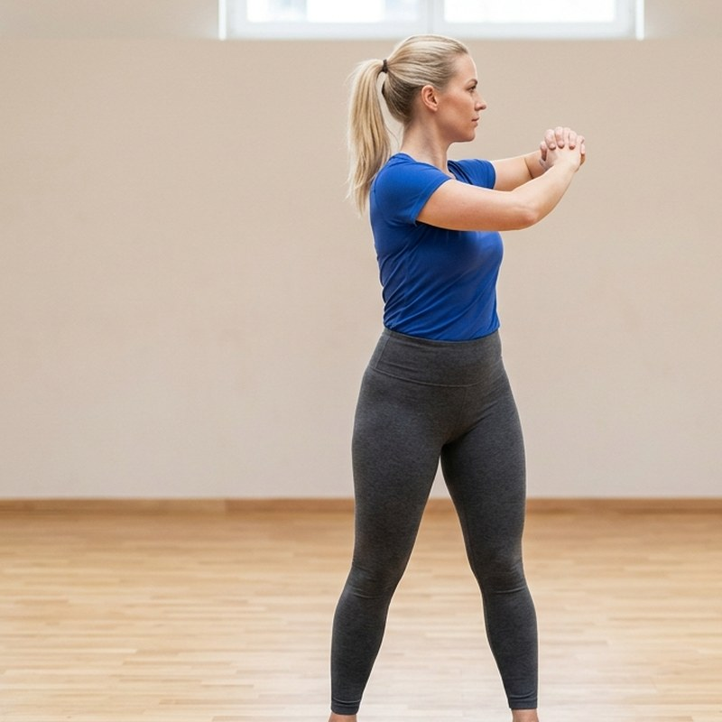

Respiration
Fait passer le corps du sommeil à l'éveil sans brusquerie, et pose l'attention sur la séance qui commence.
- Assieds-toi confortablement, dos long, épaules relâchées.
- Inspire par le nez en comptant jusqu'à 4.
- Expire par la bouche en comptant jusqu'à 6, sans forcer la fin du souffle.
Le conseilL'expiration plus longue que l'inspiration, c'est tout le secret : c'est elle qui apaise.
À éviterGonfler les épaules à l'inspiration. Cherche plutôt à sentir les côtes s'ouvrir sur les côtés.